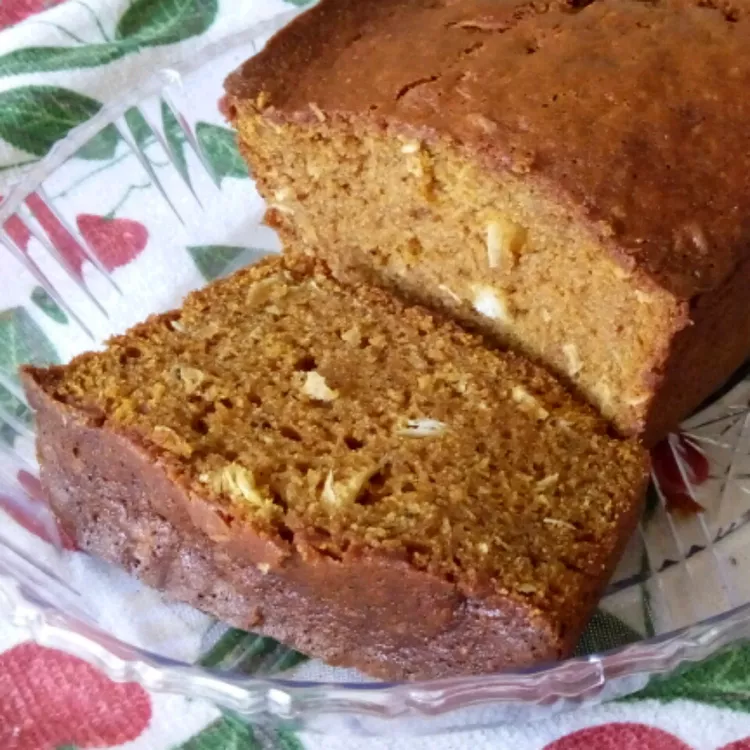

Pumpkin Coconut Bread

Description
This Pumpkin Bread With Coconut and Raisins is perfectly sweet, moist and
tender with plenty of warm spices.
It is a delicious fall treat that you will want to make all season long!
Ingredients
- white sugar
- melted butter
- eggs
- ground cloves
- ground cinnamon
- coconut
- walnuts
Steps
- Preheat oven to 350 degrees F (175 degrees C). Grease and
flour two 9 x 5 inch loaf pans.
- Mix together sugars, oil, and eggs. Mix in pumpkin. Add flour, salt, soda, and spices, and then water.
Stir together until just moistened. Stir in coconut and nuts. Pour batter into prepared pans.
- Bake for 60 minutes, or until tester inserted in the center comes out clean.